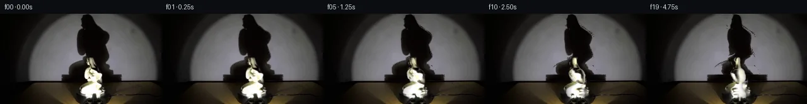

![首帧]()

Round 00
2026-11-05T04:51:22.090694+00:00像素候选变化代码 +235/−0inspection 更新
pixels 7dee7e482e2b59d9 · code 79806e85a7cbb677
查看本轮 generate.py 真实 diff
--- previous/generate.py
+++ current/generate.py
@@ -0,0 +1,235 @@
+"""Photograph-constrained volumetric yaw warps, using only local pixel operations."""
+from pathlib import Path
+import numpy as np
+from PIL import Image, ImageDraw, ImageFilter
+import cv2
+from scipy.ndimage import gaussian_filter1d, gaussian_filter
+from artifact_io import save
+
+ROOT=Path(__file__).resolve().parent
+H,W=144,256
+S=4
+im=np.array(Image.open(ROOT/'first_frame.png').convert('RGB'),dtype=np.float32)
+yg,xg=np.mgrid[:H,:W]
+
+def polygon(points):
+ out=Image.new('L',(W*S,H*S));ImageDraw.Draw(out).polygon([(round(x*S),round(y*S)) for x,y in points],fill=255)
+ return np.array(out.resize((W,H),Image.Resampling.LANCZOS),np.float32)/255
+
+# Bounds are traced on the provided photograph. The foreground lamp masks the feet.
+statue_outline=[(140,69),(144,70),(146,74),(147,78),(149,82),(153,87),(158,90),
+ (161,93),(163,98),(161,102),(161,109),(159,113),(155,116),(161,119),
+ (164,124),(162,129),(157,132),(151,133),(151,139),(143,140),(141,134),
+ (130,133),(126,130),(125,126),(127,121),(132,117),(139,114),(146,111),
+ (145,108),(138,108),(136,105),(134,104),(133,100),(133,95),(134,91),
+ (137,88),(141,86),(140,82),(138,77),(137,72)]
+obj_a=polygon(statue_outline)
+# The wall shadow includes the fixed low rectangular shadow of the turntable.
+shadow_outline=[(132,1),(141,0),(146,5),(150,14),(155,21),(164,27),(171,33),
+ (174,40),(172,48),(168,55),(169,62),(172,69),(173,77),(171,83),
+ (176,86),(177,91),(179,91),(179,97),(191,97),(191,106),(98,107),
+ (98,97),(109,97),(109,91),(110,86),(116,81),(126,77),(137,74),
+ (136,69),(130,69),(125,65),(123,57),(122,49),(122,38),(123,30),
+ (126,25),(130,24),(131,21),(129,16),(128,9),(130,7)]
+sh_bounds=polygon(shadow_outline)
+# Reconstruct just the occluded region of the wall. Observed surrounding pixels stay fixed.
+wall=np.copy(im)
+for y in range(107):
+ xx=np.arange(W)
+ valid=(xx>=65)&(xx<=237)&(sh_bounds[y]<.02)&(obj_a[y]<.02)
+ # Stay inside the interior of the pool of light, avoiding its dark rim.
+ valid &= im[y].mean(axis=-1)>42
+ if valid.sum()<20:
+ valid=(xx>=97)&(xx<=184)&(sh_bounds[y]<.01)
+ xfit=(xx[valid]-145)/80
+ basis=np.stack([xfit**k for k in range(4)],1)
+ target=im[y,valid]
+ coef=np.linalg.lstsq(basis,target,rcond=None)[0]
+ full=np.stack([((xx-145)/80)**k for k in range(4)],1)@coef
+ change=(sh_bounds[y]>.001)|(obj_a[y]>.001)
+ wall[y,change]=np.clip(full[change],0,255)
+# The wall/table seam is stationary and retained below y=107.
+# Remove porcelain from the turntable and table with a small local inpaint.
+remove=(obj_a>.001).astype(np.uint8)*255
+below=remove.copy();below[:107]=0
+plate=cv2.inpaint(np.clip(wall,0,255).astype(np.uint8),below,3,cv2.INPAINT_TELEA).astype(np.float32)
+# Recover an opaque shadow photograph without bright porcelain pixels in it.
+shadow_pic=cv2.inpaint(im.astype(np.uint8),(remove*(yg<107)).astype(np.uint8),3,cv2.INPAINT_TELEA).astype(np.float32)
+shadow_pic[:107]=cv2.inpaint(shadow_pic[:107].astype(np.uint8),remove[:107],3,cv2.INPAINT_TELEA)
+# Matting against the clean wall preserves observed softly blurred shadow edges.
+bg_l=np.maximum(plate.mean(axis=-1),8)
+sh_l=shadow_pic.mean(axis=-1)
+shadow_a=np.clip((bg_l-sh_l)/(bg_l-4+1e-5),0,1)*sh_bounds
+shadow_a[107:]=0
+shadow_a[69:107]=np.maximum(shadow_a[69:107],obj_a[69:107]*.96)
+shadow_rgb=np.array([4.,3.,1.])[None,None,:]+np.zeros_like(im)
+# Tiny photographic chromatic differences survive in the umbra.
+shadow_rgb+=np.clip(shadow_pic-sh_l[:,:,None],-3,3)*shadow_a[:,:,None]
+# Dark fixed shadow of platform at the seam is kept separate from the figure.
+fixed_a=shadow_a.copy();fixed_a[:97]=0
+moving_a=shadow_a.copy();moving_a[97:]=0
+# The shadow lower edge is attached to the fixed platform shadow.
+
+# Determine a row-wise elliptical visual hull from the measured statue cutout.
+rows=np.flatnonzero(obj_a.max(axis=1)>.1)
+oy0,oy1=int(rows[0]),int(rows[-1])
+oc=np.full(H,147.,np.float32);orr=np.zeros(H,np.float32)
+for y in rows:
+ xs=np.flatnonzero(obj_a[y]>.18)
+ oc[y]=(xs[0]+xs[-1])/2
+ orr[y]=(xs[-1]-xs[0]+1)/2
+oc[oy0:oy1+1]=gaussian_filter1d(oc[oy0:oy1+1],.6)
+orr[oy0:oy1+1]=gaussian_filter1d(orr[oy0:oy1+1],.55)
+# Depth is inferred. A bent pose is preserved by changing slice centres with height.
+zkeys=np.array([69,77,86,94,104,110,119,128,134,140])
+zvals=np.array([-1.,-1.4,-.5,-1.4,1.5,1.4,-2.8,0.,0.,0.])
+oz=np.interp(np.arange(H),zkeys,zvals)
+thickness=np.interp(np.arange(H),[69,83,97,111,123,140],[.82,.84,.80,.72,.58,.80])
… diff truncated; 148 more lines …